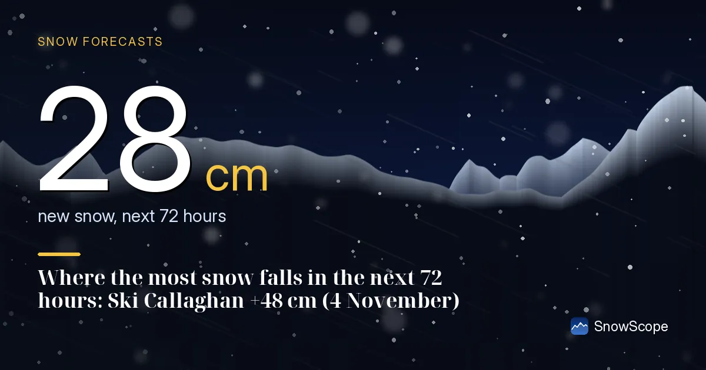
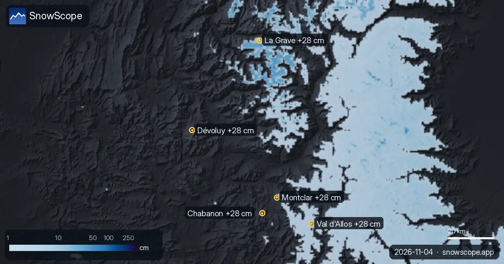
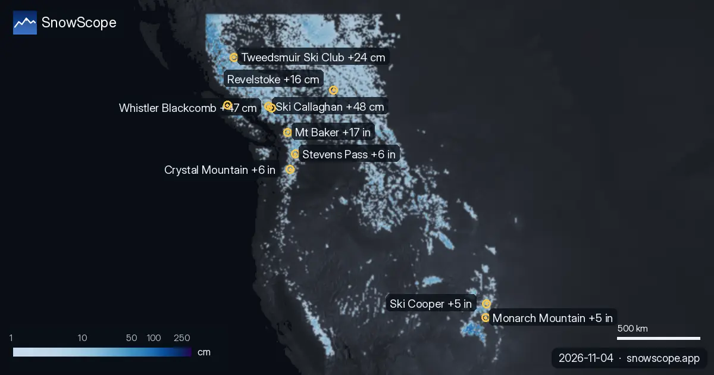

Where the most snow falls in the next 72 hours: Ski Callaghan +48 cm (4 November)
Ski Callaghan in Western Canada will receive the most new snow across all three regions in the next three days, with 48 cm forecast by 7 November. This forecast ranks resorts by snow expected on the upper slopes; the top places are usually accurate, but exact totals a few days ahead can shift.
See the live snow forecast for Ski Callaghan in the SnowScope appSnow depth, powder alerts and the 3D map, free.
Western Canada leads by far
Ski Callaghan tops the list with 12 cm in the next 24 hours and 48 cm total through 7 November, with the snow line near 1,200 m. Whistler Blackcomb follows closely with 11 cm tomorrow and 47 cm by 7 November, also with a low snow line at 1,900 m. Mount Cain Alpine Park will see 9 cm in the next 24 hours and 34 cm within three days, with a snow line around 1,800 m.
The snow line—roughly 300 m below the freezing level—marks where wet snow and rain begin. Above it, you get cold, light powder. All three Canadian resorts have low snow lines, so most of their terrain will be in the dry snow zone.
| # | Resort | Region | +24 h | +72 h | Snow line |
|---|---|---|---|---|---|
| 1 | Val d'Allos | Alps · France | 12 cm | 28 cm | 2,100 m |
| 2 | Chabanon | Alps · France | 10 cm | 28 cm | 2,100 m |
| 3 | Dévoluy | Alps · France | 10 cm | 28 cm | 2,100 m |
| 4 | Montclar | Alps · France | 9 cm | 28 cm | 2,100 m |
| 5 | La Grave | Alps · France | 5 cm | 28 cm | 2,900 m |
| 6 | Isola 2000 | Alps · France | 15 cm | 27 cm | 2,000 m |
| 7 | Chaillol | Alps · France | 8 cm | 27 cm | 2,100 m |
| 8 | Val d'Allos | Alps · France | 11 cm | 25 cm | 2,100 m |
| # | Resort | Region | +24 h | +72 h | Snow line |
|---|---|---|---|---|---|
| 1 | Mt Baker | US West · United States | 7 in (17 cm) | 17 in (44 cm) | 7,900 ft (2,400 m) |
| 2 | Stevens Pass | US West · United States | 3 in (7 cm) | 6 in (14 cm) | 8,200 ft (2,500 m) |
| 3 | Crystal Mountain | US West · United States | 2 in (5 cm) | 6 in (14 cm) | 9,500 ft (2,900 m) |
| 4 | Monarch Mountain | US West · United States | 5 in (13 cm) | 5 in (13 cm) | 9,800 ft (3,000 m) |
| 5 | Ski Cooper | US West · United States | 4 in (11 cm) | 5 in (13 cm) | 9,800 ft (3,000 m) |
| 6 | Sahalie Ski Club | US West · United States | 3 in (8 cm) | 5 in (13 cm) | 8,500 ft (2,600 m) |
| 7 | Dutch Henry Ski Hill | US West · United States | 4 in (11 cm) | 5 in (12 cm) | 9,800 ft (3,000 m) |
| 8 | Hurricane Ridge | US West · United States | 2 in (4 cm) | 4 in (11 cm) | 8,900 ft (2,700 m) |
| # | Resort | Region | +24 h | +72 h | Snow line |
|---|---|---|---|---|---|
| 1 | Ski Callaghan | Western Canada · Canada | 12 cm | 48 cm | 1,200 m |
| 2 | Whistler Blackcomb | Western Canada · Canada | 11 cm | 47 cm | 1,900 m |
| 3 | Mount Cain Alpine Park | Western Canada · Canada | 9 cm | 34 cm | 1,800 m |
| 4 | Tweedsmuir Ski Club | Western Canada · Canada | 1 cm | 24 cm | 1,300 m |
| 5 | Revelstoke | Western Canada · Canada | 4 cm | 16 cm | 1,900 m |
| 6 | Sasquatch | Western Canada · Canada | 11 cm | 15 cm | 2,200 m |
| 7 | Manning Park Resort | Western Canada · Canada | 4 cm | 12 cm | 2,200 m |
| 8 | Grouse Mountain | Western Canada · Canada | 7 cm | 10 cm | 2,000 m |

Europe: southern Alps favour skiers
Val d'Allos leads France with 12 cm tomorrow and 28 cm by 7 November, snow line at 2,100 m. Chabanon and Dévoluy match Val d'Allos's three-day total of 28 cm, with Chabanon getting 10 cm in the next 24 hours and Dévoluy also 10 cm. Montclar adds 9 cm tomorrow and 28 cm over three days, all with snow lines between 2,100 and 2,100 m.
Isola 2000 differs: it expects 15 cm in the next 24 hours but only 27 cm total by 7 November, with a lower snow line at 2,000 m. High terrain at these southern Alps resorts—tops above 2,400 m—will capture the best powder.

United States: Mt Baker stands out
Mt Baker leads US resorts with 7 in (17 cm) in the next 24 hours and 17 in (44 cm) by 7 November, snow line near 7,900 ft (2,400 m). Monarch Mountain and Ski Cooper follow with 13 cm each over three days, though both see only 11 to 13 cm tomorrow. Stevens Pass expects just 3 in (7 cm) tomorrow and 6 in (14 cm) total, with snow line at 8,200 ft (2,500 m).
The difference is sharp: Mt Baker will collect three times more snow than Stevens Pass in the same period. The snow line at Mt Baker sits lower, keeping more terrain in powder country.
What the snow line means for your day
The snow line moves with temperature and is a guide, not a hard rule. At Ski Callaghan (1,200 m), nearly the whole mountain sits above it, so expect dry powder most everywhere. At La Grave in France (2,900 m), only the very summit gets true powder; runs lower down may see dense, sticky snow or slush as rain mixes in.
Check the snow line for your resort and ride the highest terrain first. By midday, sun and skiers soften new snow fast. If the snow line climbs above the lifts during your visit, head for the summits.
Timing and uncertainty
These forecasts a few days ahead can change: systems shift, and totals shift with them. The table ranks resorts, not certainties—the top places are usually right, but exact amounts are less sure. Check the map again the day before you travel.
In Canada, the heaviest snow arrives soon and all at once. In Europe, amounts are smaller but spread across the region. Neither pattern favours hesitation: get on the slopes early after a dump.
Tips for skiers
- First light on the mountain after fresh snow gives you the best powder. Sun and skiers change the snow by noon; don't wait.
- Find your resort's snow line in this forecast and ride above it. That is where dry powder lives. Below it, expect wet, heavy snow or rain.
- Check the official avalanche bulletin before you leave the piste for off-piste or touring terrain.
- These forecasts are from 4 November for the next three days. Look at the SnowScope map again on the morning you plan to ski to catch any changes.
- Get a powder alert in the SnowScope app to know when snow arrives at your chosen resort.
About these numbers
Resort snow depths are the deepest snow on the resort's upper slopes on the date shown; they are estimates for an area, not a measurement at one point. Forecasts can change. Always read the official avalanche bulletin before going off-piste.
Official avalanche bulletins: EAWS (Europe) · avalanche.org (US) · Avalanche Canada
Cite this report
For research, teaching or the press: the numbers and charts are free to reuse under CC BY 4.0 with this citation.
SnowScope (2026), Where the most snow falls in the next 72 hours: Ski Callaghan +48 cm (4 November), https://snowscope.app/blog/en/2026/11/where-most-snow-falls-next-72-hours-4-november-2026.html, accessed 2026-11-04
SnowScope (Atlas Labs). (2026, November 4). Where the most snow falls in the next 72 hours: Ski Callaghan +48 cm (4 November). SnowScope snow reports. https://snowscope.app/blog/en/2026/11/where-most-snow-falls-next-72-hours-4-november-2026.html
BibTeX
@misc{snowscope2026wheremostsnowfallsnext72,
author = {{SnowScope (Atlas Labs)}},
title = {Where the most snow falls in the next 72 hours: Ski Callaghan +48 cm (4 November)},
year = {2026},
month = nov,
howpublished = {\url{https://snowscope.app/blog/en/2026/11/where-most-snow-falls-next-72-hours-4-november-2026.html}},
note = {Published 2026-11-04 14:49 UTC; accessed 2026-11-04}
}· CC BY 4.0 · Methods, data and tools →
Ski Callaghan: snow and temperature by height, this winter vs last (tools) →
Follow Ski Callaghan
Free: a message when fresh snow is coming, and the forecast every morning.
More snow reports

Ski Callaghan leads Western Canada forecast with 48 cm new snow through 7 November, mostly on 6th, with higher elevations capturing deeper accumulation.

Whistler Blackcomb leads the three-day snow forecast with 130 cm by 12 November. SnowScope tracks new snow across the Alps, US West and Western Canada on 9 November.

Whistler Blackcomb gained 24 cm in one week to 50 cm total; 62 cm more forecast in 72 hours as major storms hit mountains (8 November data).